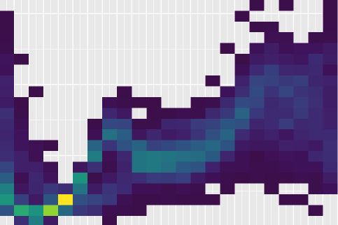
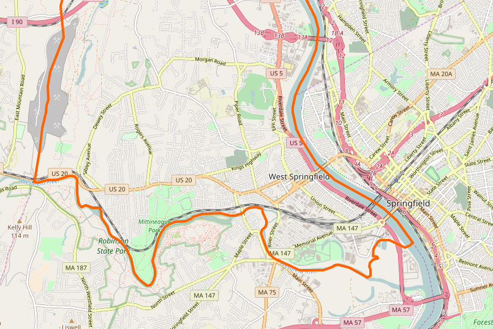

B.S., Johns Hopkins University
Data Analyst Nanodegree, Udacity
Courtney Ferguson Lee
Programming Languages
- Python
- R
Databases
- SQL
Analytical Software
- Tableau
I’m a data scientist who loves using statistics and computer science to answer questions. My expertise is in scraping, cleaning, reshaping, visualizing and modeling data. I’d love to combine my years of teaching experience with my data analysis skills to help your organization discover new insights.
Featured Work
Uber Exploratory Analysis
How do Uber trips vary over time and by location?
PISA Explanatory Analysis

How do gender differences, school factors and home life affect academic performance?
UFC Fight Prediction

Can we predict the winner of a UFC fight with machine learning?
Enron Fraud Detection
Can we predict fraud using email and financial records?
OpenStreetmap Cleaning
How do we systematically clean up map data in Python and SQL?
Iceberg Image Classifier

Can we distinguish ship and iceberg satelite images with machine learning?